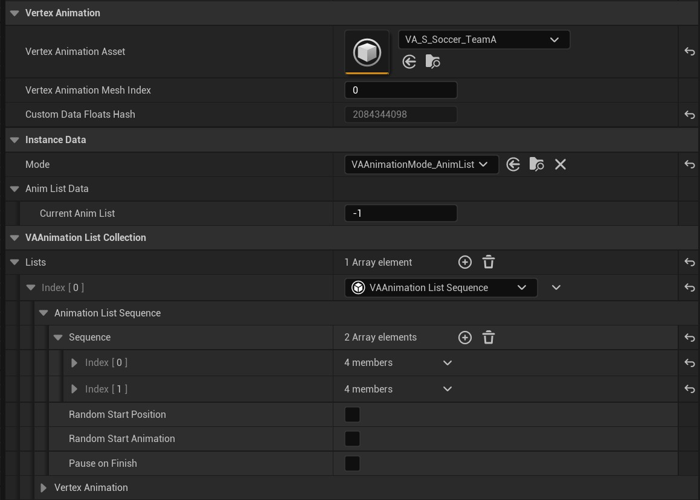

UVAMeshComponent
A component that allows playback of a single instance of a VA Asset Collection. Perfect for hero characters or any situation where you need precise control over a single animated mesh, rather than managing multiple instances with the VA Instanced Mesh Component.
The VA Mesh Component inherits from UStaticMeshComponent and uses a modular architecture with separate sub-components for different functionalities.

Core Properties
- Vertex Animation Asset: Select your VA Asset Collection containing the mesh and animation data
- Vertex Animation Mesh Index: Select which mesh to use from the asset collection (if it contains multiple meshes)
- Custom Data Floats Hash: Read-only property showing the hash of custom data configurations
Sub-Components Architecture
The VA Mesh Component uses a modular design with specialized sub-components:
- Animation Lists Collection: Manages multiple animation lists
- Animation Mode Manager: Controls how animations are played (single vs. list mode)
- Instance Data Stores: Manage both persistent and runtime-only animation data
Animation Modes
Single Animation Mode
Play individual animations directly from the VA Asset Collection. Use this mode when you need precise control over specific animations.
Animation List Mode
Play animations through Animation Lists that define playback behavior. Animation Lists can be:
- Sequential: Play animations in order
- Random: Play animations randomly from the list
- Custom Logic: Use custom animation list implementations
Animation Lists
Animation Lists are now
UVAAnimationListobjects that contain:
- Animation References: List of animations from the VA Asset Collection
- Logic Data: Settings that control playback behavior
- Playback Rules: How animations transition and repeat
Animation Control Functions
Key Blueprint-callable functions for controlling animations:
PlaySingleAnimation: Play a specific animation from the asset collectionPlayAnimationList: Start playback using an animation listSetAnimationAsset: Change the VA Asset Collection at runtimeSetAnimationMeshIndex: Switch between meshes in multi-mesh collectionsSetAnimationMode: Toggle between single and list animation modesThese functions are provided by the Animation Mode Manager and Animation Lists systems.
See Also
- Getting Started - Understand how components fit into the overall process
- VA Instanced Mesh Component - For managing multiple instances
- Animation Control - Control animations with Single and AnimList modes
- Custom Animation Lists - Create custom animation behaviors
- VA Asset Collection - The asset type used by this component